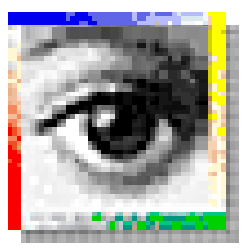

-

1990
Photoshop 1.0
- 최초버전 제작
-

1991
Photoshop 2.0
- 채널 추가
- 윈도우를 지원하는 첫 버전
-

1994
Photoshop 3.0
- 탭 형식의 팔레트 메뉴 추가
- 레이어 추가
-

1996
Photoshop 4.0
- Adjustment 레이어 추가
- 액션 기능 추가
-

1998
Photoshop 5.0
- 문자편집 기능
- 다중 실행 취소 (히스토리 팔레트)
- 색 관리
-

2000
Photoshop 6.0
- 인터페이스 변경
- 힐링 브러시
- Liquify 필터
- 픽셀유동화 기능
-

2002
Photoshop 7.0
- 모든 문자를 벡터로 처리
- 힐링 브러시 개선
- 그리기 엔진 개선
-

2003
Photoshop CS
- A카메라 RAW 2.x
- Slice Tool 개선
- Shadow/Highlight 메뉴 추가
- Match Color 메뉴 추가
- Lens blur 필터 추가
- 실시간 히스토그램
- 사용자 메뉴 구성
-

2005
Photoshop CS2
- 카메라 RAW 3.x
- 스마트 오브젝트
- 이미지 변형(Image Warp)
- 스팟 힐링 브러시(Spot healing brush)
- 적목 현상 교정
- 소실점
- 노이즈 감소 기능
- HDRI 지원
- 폰트 미리보기
- 레이어 다중선택